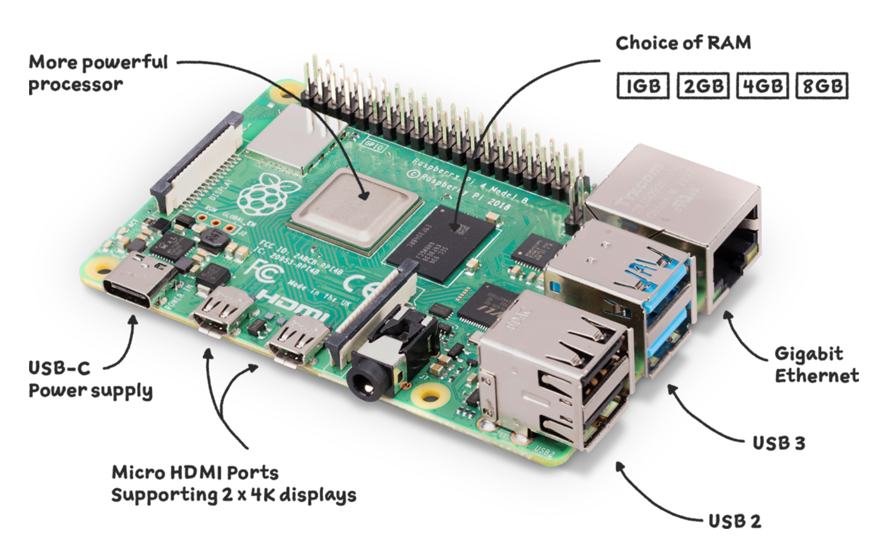
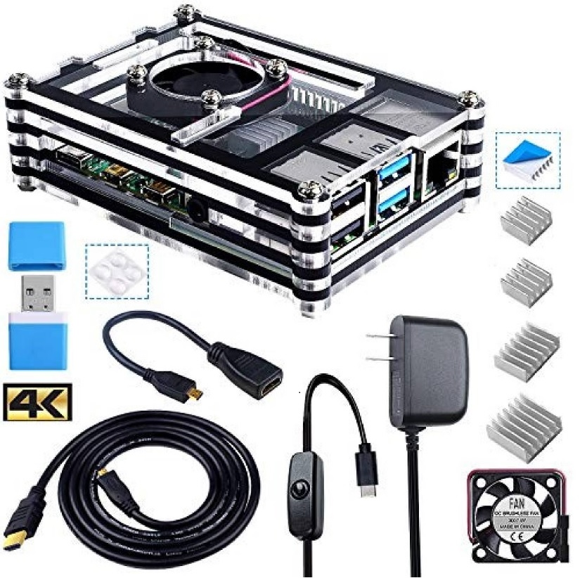
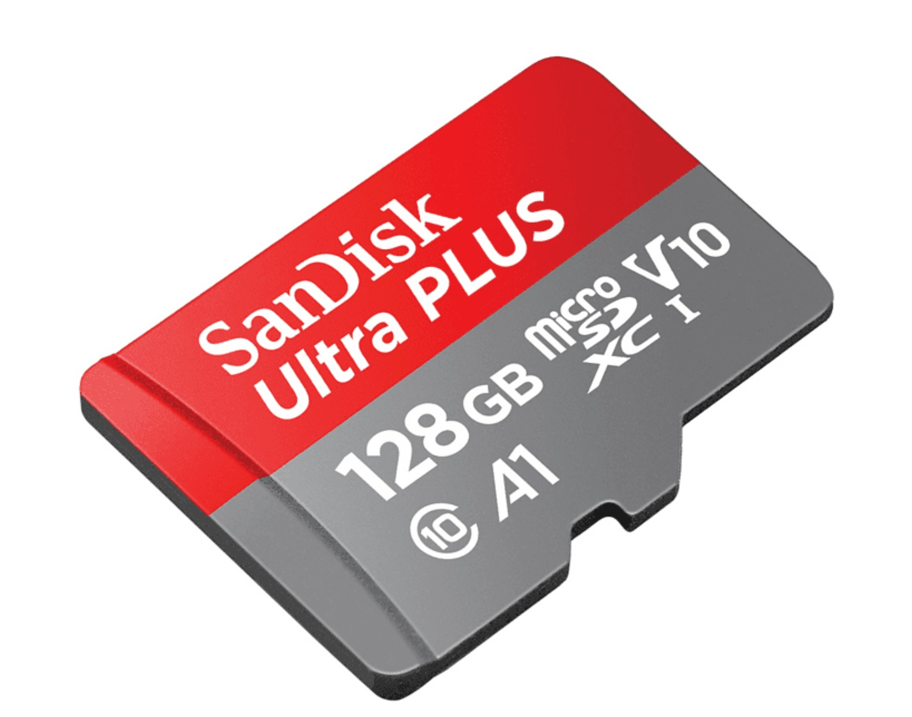

¡Haz Tu Consola Retro!
Primeros pasos
Para empezar, deberías conseguir un ordenador monoplaca de bajo coste, en la actualidad se encuentran varios tipos en el mercado, el más conocido es la Raspberry Pi, pero también existen otras marcas como la Asus Tinker Board S, LePotato, La Frite, Rock64MediaBoard, entre otros.
El precio no es muy alto, el modelo actual de la Raspberry Pi 4b, cuesta alrededor de 60€, además es recomenbable obtener un kit de carcasa, cable alimentador y disipadores, que en el mercado oscilan sobre los 15€.
También necesitaremos de una tarjeta de memoria micro SD para poder instalar el software y almacenar los sistemas de juegos y sus respectivas Roms. Mientras más capacidad de almacenamiento, más contenido podrás tener en tu consola, se pueden conseguir por 20€ con 128GB de capacidad.
En total, por 100€ aproximadamente, puedes tener lo necesario para crear tu propia consola retro, ahora vamos con los siguientes pasos.
Instalando el software
Ahora, debemos conseguir un programa para ejecutar los diferentes sistemas que tendra nuestra consola, existen diversas opciones, como lo son el RecalBox, RetroPie, Batocera, Lakka, entre otros.
- RecalBox
- RetroPie
- Batocera
- Lakka

Al tener claro que programa que vamos a utilizar, lo ideal para usuarios no experimentados, es descargar una imagen (archivo.iso) con todos los sistemas y roms preinstalados, se encuentran fácilmente por la web, desde imágenes básicas de 16Gb o 32 Gb con emuladores sencillos y fáciles de ejecutar (Atari 2600, Nintendo, Sega, Gameboy, Snes, etc...), hasta archivos iso con 128Gb o 256Gb con sistemas de más potencia (PlayStation 1 y 2, Nintendo 64, NeoGeo, MaMe, entre otros). Claro que la capacidad de almacenamiento, no es lo único que importa para ejecutar sistemas que consumen más recursos, todo dependerá del poder de nuestra placa. Al instalar la iso en nuestra MicroSD y ponerla en nuestro ordenador monoplaca, ya solo quedaría conectar el cable de alimentación y un cable para la pantalla, configurar los ajustes del programa, como los mandos, el audio y video, y por último solo queda disfrutar.
Podemos apreciar el funcionamiento de nuestra consola, y a partir de esto se puede crear muchas cosas más, como una ¡Recreativa!